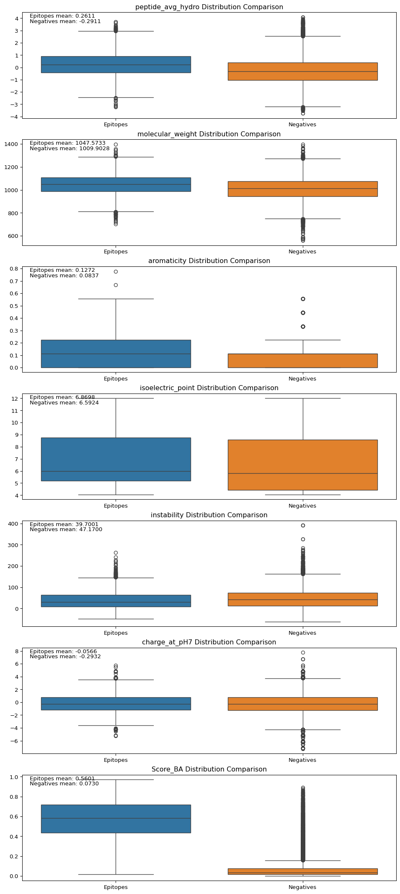
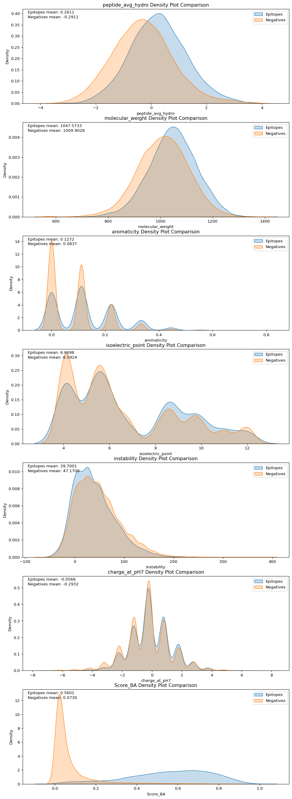
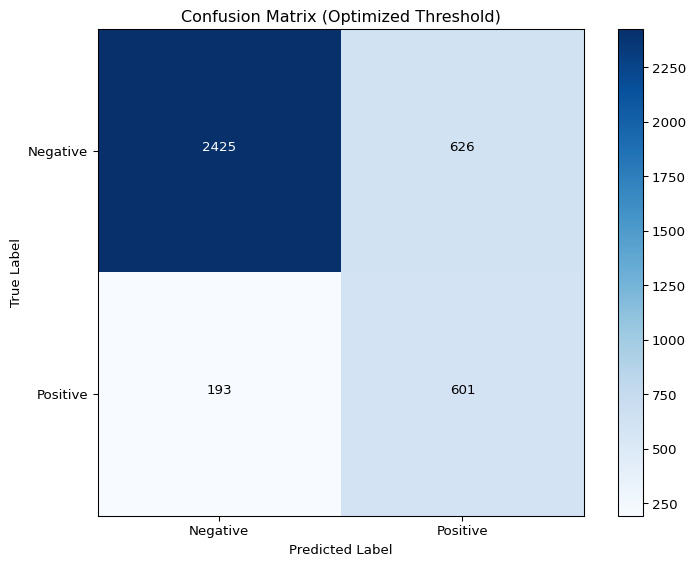
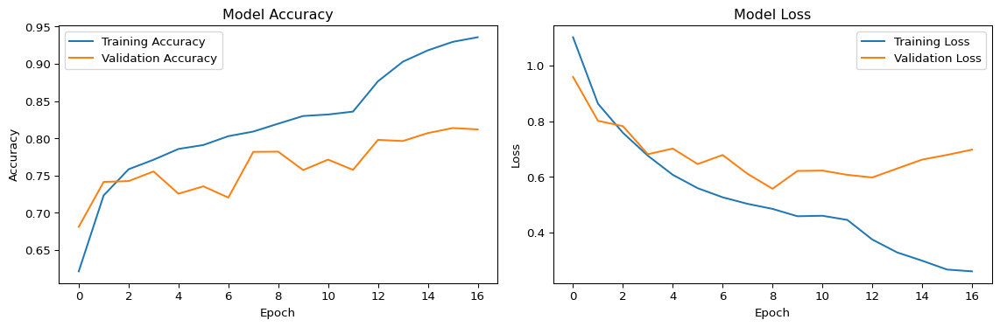
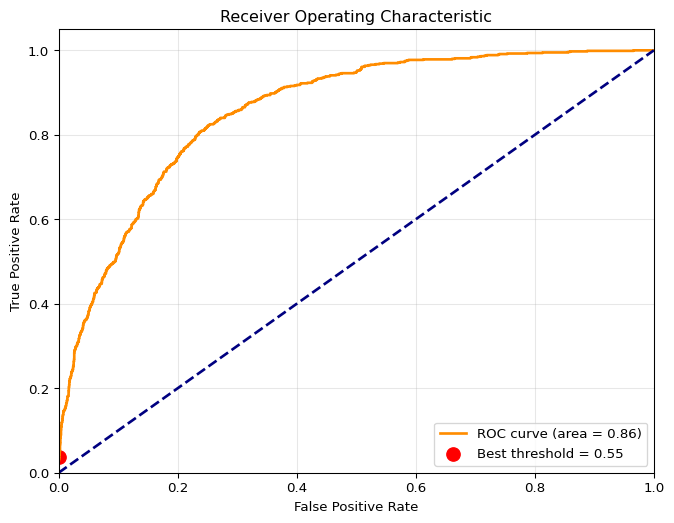
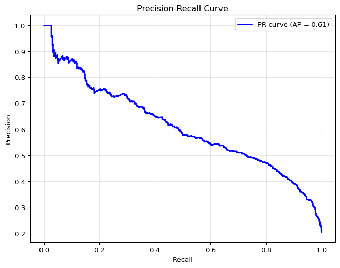
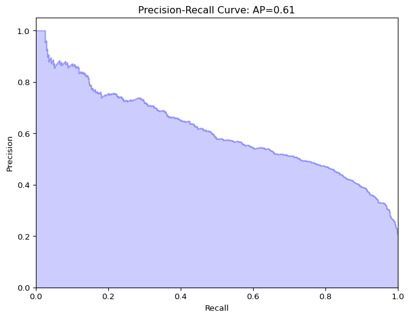
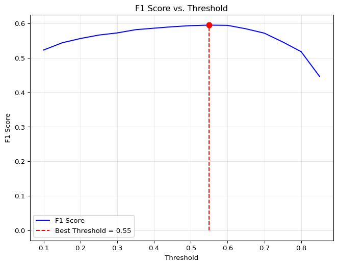

Epitope classification is a critical area of immunology and vaccine development that focuses on identifying and characterizing specific regions of antigens that are recognized by the immune system. Epitopes serve as the molecular interface between pathogens and the host immune response, making their accurate identification essential for understanding immune responses and developing targeted therapeutics. As shown in Figure 2, standard chemotherapy treatment targets rapidly dividing cells which can include the hosts immune system, making them counterproductive. However, effective fabrication of personalized antigens would make treatment much less physically devastating.
Data
Dataset
The dataset utilized for this analysis is sourced from The Immune Epitope Database (IEDB), a publicly available database of manually extracted data from published scientific research on antibody and T-cell epitopes. It was created to aggregate and centralize data on how the immune system recognizes specific molecular features, known as epitopes, on antigens.
The database can be queried for known epitopes, returning a list of assays — tests or experiments — that have been performed on the antigen and their results. These tests can include whether or not a particular epitope binds to the MHC complex or is capable of triggering a cytokine release to kill living cells.
The scope of my analysis will be limited to epitopes sourced from human cancer T-cells that were tested and found to produce an autoimmune response. While the database has a wide range of information about each antigen, I will only be utilizing the epitopes’ amino acid sequence and the MHC allele it was tested against.
Along with these features, each epitope entry also contains a link to the antigen’s full amino acid sequence. These full sequences come from the UniProt database, which contains a collection of protein sequences and their associated information. These full sequences will be used to generate negative samples for the model.
Libraries and packages
Code
# Importing librariesimport pandas as pdfrom collections import Counterimport matplotlib.pyplot as pltimport seaborn as snsimport numpy as npimport Biofrom sklearn.ensemble import RandomForestClassifierfrom sklearn.metrics import classification_report, accuracy_score, confusion_matrix, roc_auc_score, roc_curvefrom Bio.SeqUtils.ProtParam import ProteinAnalysisimport requestsfrom io import StringIOfrom Bio import SeqIO
Preprocessing
Code
epitopes = pd.read_csv(r'/Users/tariq/Documents/capstone/data/epitope_table_export_1740279588.csv')assays = pd.read_csv(r'/Users/tariq/Documents/capstone/data/tcell_table_export_1740279970.csv')def fetch_full_sequence(url):if pd.notna(url): # Check if the URL is not NaN url =f'{url}.fasta'try: response = requests.get(url)if response.status_code ==200: fasta_io = StringIO(response.text) records =list(SeqIO.parse(fasta_io, "fasta"))if records: # Check if there are any recordsreturnstr(records[0].seq)else:print("No records found in the FASTA file.")except requests.exceptions.RequestException as e:print(f"Request failed: {e}")returnNone#epitopes['Full Sequence'] = epitopes['Epitope - Molecule Parent IRI'].apply(fetch_full_sequence)epitopes = pd.read_csv(r'/Users/tariq/Documents/capstone/data/epitope_full_seq.csv')# make all the column names snake caseepitopes.columns = epitopes.columns.str.lower()assays.columns = assays.columns.str.lower()# remove spaces from column namesepitopes.columns = epitopes.columns.str.replace(' ', '')epitopes.columns = epitopes.columns.str.replace('-', ' ')epitopes.columns = epitopes.columns.str.replace(' ', '_')assays.columns = assays.columns.str.replace(' ', '')assays.columns = assays.columns.str.replace('-', ' ')assays.columns = assays.columns.str.replace(' ', '_')epitopes = epitopes.filter(['epitope_name', 'fullsequence'])assays = assays.filter(['epitope_name', 'epitope_moluculeparent', 'host_name', 'host_mhcpresent', 'assay_method','assay_responsemeasured', 'assay_qualitativemeasurement', 'mhcrestriction_name', 'mhcrestriction_class', 'assayantigen_name'])# map mhc name and class from the assays dataframe to a new column in the epitopes dataframe based on epitope_namemhc = assays.filter(['epitope_name', 'mhcrestriction_name', 'mhcrestriction_class'])mhc = mhc.drop_duplicates(subset=['epitope_name'])epitopes = epitopes.merge(mhc, on='epitope_name', how='left')epitopes.head()
epitope_name
fullsequence
mhcrestriction_name
mhcrestriction_class
0
AAGIGILTV
MPREDAHFIYGYPKKGHGHSYTTAEEAAGIGILTVILGVLLLIGCW...
HLA-A2
I
1
AAGIGILTVI
MPREDAHFIYGYPKKGHGHSYTTAEEAAGIGILTVILGVLLLIGCW...
HLA-A*02:01
I
2
ACDPHSGHFV
NaN
HLA-A2
I
3
ADLVGFLLLK
MSLEQRSLHCKPEEALEAQQEALGLVCVQAATSSSSPLVLGTLEEV...
HLA-A*11:01
I
4
ADVEFCLSL
MLLAVLYCLLWSFQTSAGHFPRACVSSKNLMEKECCPPWSGDRSPC...
HLA-B*44:03
I
Retriving the data from IEDB was as simple as doing a search and clicking exoprt. Two files were exported, one containing 28,681 unique epitopes and another with their corresponding assays and respective results. Roughly 10% of the epitopes in the dataset came with a corresponding UniProt link. For our purposes this will be enough. Using the requests python library, the full antigen sequence was downloaded and appended to the epitope dataset. Next, simple formatting was done to standardize the column names. Finally, the epitope dataset was merged with the assays dataset on the epitope_name column and filtered to include the following columns:
Negative Sample Generation
Code
def generate_negatives(row): epitope = row["epitope_name"] full_seq = row["fullsequence"] mhc = row["mhcrestriction_name"]# Handle missing or empty sequencesif pd.isnull(full_seq) or full_seq =="":return [] epitope =str(epitope) full_seq =str(full_seq) ep_len =len(epitope) negatives = []for i inrange(len(full_seq) - ep_len +1): window = full_seq[i:i+ep_len]if window != epitope: negatives.append({"peptide": window, "mhc": mhc})return negatives# Apply the function to each rownegatives = pd.DataFrame()negatives['negatives'] = epitopes.apply(generate_negatives, axis=1)negatives = negatives[["negatives"]].explode("negatives").reset_index(drop=True)negatives.dropna(subset=["negatives"], inplace=True)# Remove duplicate peptide-mhc combinationsprint(f"Shape before removing duplicates: {negatives.shape}")negatives = negatives.drop_duplicates(subset=['negatives'])print(f"Shape after removing duplicates: {negatives.shape}")# Check for any remaining NaN valuesprint(f"Number of NaN values in negatives: {negatives['negatives'].isna().sum()}")# Extract peptide and mhc into separate columnsnegatives['peptide'] = negatives['negatives'].apply(lambda x: x['peptide'])negatives['mhc'] = negatives['negatives'].apply(lambda x: x['mhc'])
Although the IEDB database provided a substantial amount of epitopes, in order draw visual comparisons and create models to classify epitopes, samples of non-epitope peptides are needed. These can be generated by shuffling and sampling amino acid sequences from the full antigen sequences of the epitopes, ensuring that the sampled sequences did not overlap with the epitope sequences.
There are pros and cons to this methodology. As opposed to generating completely random sequences of amino acids — sampling from larger sequences allows for natural patterns and physiochemical motifs to be retained. That is not to say the performance of statistical modeling or qualitative analysis will be better. Random sequences are more likely to be highly irregular, or even biologically implausible. Sampling from the full antigen sequences eliminates this potential bias.
Conversely, it is possible for a randomly sampled peptide to be an epitope that has not been tested yet, or simply isn’t in the subset of data used for this analysis — resulting in an increase in the number of false negatives in our data.
Feature Engineering
Code
# Kyte-Doolittle hydrophobicity scalekyte_doolittle = {'I': 4.5, 'V': 4.2, 'L': 3.8, 'F': 2.8, 'C': 2.5,'M': 1.9, 'A': 1.8, 'G': -0.4, 'T': -0.7, 'S': -0.8,'W': -0.9, 'Y': -1.3, 'P': -1.6, 'H': -3.2, 'E': -3.5,'Q': -3.5, 'D': -3.5, 'N': -3.5, 'K': -3.9, 'R': -4.5}def compute_avg_hydrophobicity(peptide):# Get hydrophobicity scores for each amino acid; default to 0 if missing scores = [kyte_doolittle.get(aa, 0) for aa in peptide]returnsum(scores) /len(scores) if scores else0# Apply the function to the 'peptide' column to create a new column 'avg_hydro'epitopes['epitope_avg_hydro'] = epitopes['epitope_name'].apply(compute_avg_hydrophobicity)# Import the molecular_weight function from Bio.SeqUtilsdef calculate_molecular_weight(peptide):"""Calculate the molecular weight of a peptide sequence using Biopython."""try:# ProteinAnalysis only works with standard amino acids protein = ProteinAnalysis(peptide)return protein.molecular_weight()exceptExceptionas e:# Handle peptides with non-standard amino acidsreturnNone# Apply the function to calculate molecular weight for each epitopeepitopes['molecular_weight'] = epitopes['epitope_name'].apply(calculate_molecular_weight)def calculate_aromaticity(peptide):"""Calculate the aromaticity of a peptide sequence using Biopython."""try:# ProteinAnalysis only works with standard amino acids protein = ProteinAnalysis(peptide)return protein.aromaticity()exceptExceptionas e:# Handle peptides with non-standard amino acidsreturnNone# Apply the function to calculate molecular weight for each epitopeepitopes['aromaticity'] = epitopes['epitope_name'].apply(calculate_aromaticity)def calculate_isoelectric_point(peptide):"""Calculate the isoelectric point of a peptide sequence using Biopython."""try:# ProteinAnalysis only works with standard amino acids protein = ProteinAnalysis(peptide)return protein.isoelectric_point()exceptExceptionas e:# Handle peptides with non-standard amino acidsreturnNone# Apply the function to calculate molecular weight for each epitopeepitopes['isoelectric_point'] = epitopes['epitope_name'].apply(calculate_isoelectric_point)def calculate_instability(peptide):"""Calculate the instability of a peptide sequence using Biopython."""try:# ProteinAnalysis only works with standard amino acids protein = ProteinAnalysis(peptide)return protein.instability_index()exceptExceptionas e:# Handle peptides with non-standard amino acidsreturnNone# Apply the function to calculate molecular weight for each epitopeepitopes['instability'] = epitopes['epitope_name'].apply(calculate_instability)def calculate_charge_at_pH7(peptide):"""Calculate the charge of a peptide sequence at pH 7 using Biopython."""try:# ProteinAnalysis only works with standard amino acids protein = ProteinAnalysis(peptide)return protein.charge_at_pH(7)exceptExceptionas e:# Handle peptides with non-standard amino acidsreturnNone# Apply the function to calculate molecular weight for each epitopeepitopes['charge_at_pH7'] = epitopes['epitope_name'].apply(calculate_charge_at_pH7)# Calculate features on the peptide columnnegatives['peptide_length'] = negatives['peptide'].apply(len)negatives['peptide_avg_hydro'] = negatives['peptide'].apply(compute_avg_hydrophobicity)negatives['molecular_weight'] = negatives['peptide'].apply(calculate_molecular_weight)negatives['aromaticity'] = negatives['peptide'].apply(calculate_aromaticity)negatives['isoelectric_point'] = negatives['peptide'].apply(calculate_isoelectric_point)negatives['instability'] = negatives['peptide'].apply(calculate_instability)negatives['charge_at_pH7'] = negatives['peptide'].apply(calculate_charge_at_pH7)negatives.drop('negatives', axis=1, inplace=True)
The protein analysis tool from the BioPython package allows for some quick feature engineering on most given peptides. For this analysis, the relevant features would be hydrophobicity, molecular weight, aromaticity, isoelectric point, instability, and the charge at pH7. Publications on epitope classification hold binding affinity — the ability for a peptide to bind to the body’s MHC complex — to be a strong preditctor. The BioPython package does not come with any functionality for binding affinity prediction but IEDB database provides a tool called netMHCpan, which is the leading binding affinity prediction algorithm.
The IEDB website offers a GUI for using netMHCpan to predict binding affinities. However, it is only possible to run predictions on 100 peptides at a time and this analysis is examining many more than that. NetMHCpan can be downloaded and installed as a command line tool allowing more flexibility using python. Given an amino acid sequence and a MHC allele specification, netMHCpan returns a binding affinity score.
# Compare numeric features between epitopes and negatives datasetsnumeric_features = ['peptide_avg_hydro', 'molecular_weight', 'aromaticity', 'isoelectric_point', 'instability', 'charge_at_pH7', 'Score_BA']# Create a figure with subplots for each numeric featurefig, axes = plt.subplots(len(numeric_features), 1, figsize=(12, 4*len(numeric_features)))#fig.tight_layout(pad=5.0)# Plot boxplots for each featurefor i, feature inenumerate(numeric_features): ax = axes[i]# Create a temporary dataframe for plotting plot_data = pd.DataFrame({'Epitopes': epitopes[feature],'Negatives': negatives[feature] })# Create boxplot sns.boxplot(data=plot_data, ax=ax)# Add feature statistics epitope_mean = epitopes[feature].mean() negative_mean = negatives[feature].mean() ax.set_title(f'{feature} Distribution Comparison') ax.text(0.02, 0.95, f'Epitopes mean: {epitope_mean:.4f}', transform=ax.transAxes) ax.text(0.02, 0.90, f'Negatives mean: {negative_mean:.4f}', transform=ax.transAxes)# Add p-value from t-testfrom scipy import stats t_stat, p_value = stats.ttest_ind( epitopes[feature].dropna(), negatives[feature].dropna(), equal_var=False# Welch's t-test (doesn't assume equal variances) )#ax.text(0.02, 0.85, f'p-value: {p_value:.4e}', transform=ax.transAxes)#plt.suptitle('Comparison of Numeric Features Between Epitopes and Negatives', fontsize=16)plt.show()

A boxplot comparison of the numerical variables reveals hardly significant differences between the epitope and non-epitope peptides. The clear outlier being the predicted binding affinity score.
Code
# plot Score_BA for epitopes and negatives overlaid on the same plotplt.figure(figsize=(10, 6))# Use density instead of raw counts to normalize the histogramsplt.hist(epitopes['Score_BA'], bins=20, alpha=0.5, color='blue', edgecolor='black', label='Epitopes', density=True)plt.hist(negatives['Score_BA'], bins=20, alpha=0.5, color='red', edgecolor='black', label='Negatives', density=True)# Alternative approach: use log scale for y-axisplt.yscale('log')plt.xlabel('Binding Affinity')plt.ylabel('Density (log scale)')plt.title('Normalized Histogram of Binding Affinity for Epitopes vs Negatives')plt.legend(prop={'size': 14}) # Increased legend font sizeplt.tight_layout()plt.show()

Upon further inspection of the difference in predicted binding affinity score, we see the non-epitope peptides exhibit a right-skewed distribution with a mean of 0.07, and the epitopes show a broad, moderate-variance spread with a much higher mean of 0.56.
Modeling
Model Selection
To establish a baseline for performance, a random forest classifier will be fit to the following features:
peptide_avg_hydro
molecular_weight
aromaticity
isoelectric_point
instability
charge_at_pH7
Score_BA
Performace will be evaluated based on accuracy, precision, and recall.
Preprocessing
Prior to training, labels are assigned to the epitopes and non-epitopes as 1 or 0 respectively. The two samples are then concatenated, scaled, and shuffled. Finally, the data is split into training and testing sets with an 80/20 ratio.
Code
# Add label column to epitopes dataframe (positive class = 1)epitopes['label'] =1# Add label column to negatives dataframe (negative class = 0)negatives['label'] =0# Combine the positive and negative examplescombined_data = pd.concat([epitopes, negatives], ignore_index=True)# Shuffle the combined datasetcombined_data = combined_data.sample(frac=1, random_state=42).reset_index(drop=True)# Define features and targetX = combined_data.drop(columns=['peptide', 'label'])y = combined_data['label']# Identify numerical columns to scale (exclude one-hot encoded amino acid columns)numerical_cols = ['peptide_avg_hydro', 'molecular_weight', 'aromaticity', 'isoelectric_point', 'instability','Score_BA', 'charge_at_pH7']# Split the data into training and testing sets (80% train, 20% test)from sklearn.model_selection import train_test_splitfrom sklearn.preprocessing import StandardScalerX_train, X_test, y_train, y_test = train_test_split( X, y, test_size=0.2, random_state=42, stratify=y)# Scale numerical features using StandardScalerscaler = StandardScaler()X_train[numerical_cols] = scaler.fit_transform(X_train[numerical_cols])X_test[numerical_cols] = scaler.transform(X_test[numerical_cols])# Print the shapes to verify the splitprint(f"Training set: {X_train.shape[0]} samples")print(f"Testing set: {X_test.shape[0]} samples")print(f"Positive samples in training: {sum(y_train ==1)}")print(f"Negative samples in training: {sum(y_train ==0)}")print(f"Positive samples in testing: {sum(y_test ==1)}")print(f"Negative samples in testing: {sum(y_test ==0)}")
Training set: 20502 samples
Testing set: 5126 samples
Positive samples in training: 4236
Negative samples in training: 16266
Positive samples in testing: 1059
Negative samples in testing: 4067
Training + Evaluation
The random forest classifier is fit to the training data and evaluated on the testing data.
Code
# Initialize the Random Forest Classifierrf_model = RandomForestClassifier( n_estimators=100, # Number of trees max_depth=None, # Maximum depth of trees min_samples_split=2, min_samples_leaf=1, random_state=42)# Train the modelrf_model.fit(X_train, y_train)# Make predictions on the test sety_pred = rf_model.predict(X_test)y_pred_proba = rf_model.predict_proba(X_test)[:, 1] # Probability estimates for positive class# Confusion Matrixcm = confusion_matrix(y_test, y_pred)# Plot Confusion Matrixplt.figure(figsize=(8, 6))sns.heatmap(cm, annot=True, fmt='d', cmap='Blues', xticklabels=['Predicted Negative', 'Predicted Positive'], yticklabels=['Actual Negative', 'Actual Positive'])plt.xlabel('Predicted Label')plt.ylabel('True Label')plt.title('Confusion Matrix - Random Forest')plt.show()# Evaluate the modelprint("Random Forest Model Evaluation:")print(f"Accuracy: {accuracy_score(y_test, y_pred):.4f}")print("\nClassification Report:")print(classification_report(y_test, y_pred))# Calculate ROC AUCroc_auc = roc_auc_score(y_test, y_pred_proba)print(f"\nROC AUC Score: {roc_auc:.4f}")
Although the random forest classifier in Figure 1 is performing well, the feature importance plot reveals a concentration of importance on the predicted binding affinity score obtained from netMHCpan. This is not surprising.
Training without netMHCpan
Code
# drop the Score_BA columnX_train = X_train.drop(columns=['Score_BA'])X_test = X_test.drop(columns=['Score_BA'])
Code
# Initialize the Random Forest Classifierrf_model = RandomForestClassifier( n_estimators=100, # Number of trees max_depth=None, # Maximum depth of trees min_samples_split=2, min_samples_leaf=1, random_state=42)# Train the modelrf_model.fit(X_train, y_train)# Make predictions on the test sety_pred = rf_model.predict(X_test)y_pred_proba = rf_model.predict_proba(X_test)[:, 1] # Probability estimates for positive class# Confusion Matrixcm = confusion_matrix(y_test, y_pred)# Plot Confusion Matrixplt.figure(figsize=(8, 6))sns.heatmap(cm, annot=True, fmt='d', cmap='Blues', xticklabels=['Predicted Negative', 'Predicted Positive'], yticklabels=['Actual Negative', 'Actual Positive'])plt.xlabel('Predicted Label')plt.ylabel('True Label')plt.title('Confusion Matrix - Random Forest')plt.show()# Evaluate the modelprint("Random Forest Model Evaluation:")print(f"Accuracy: {accuracy_score(y_test, y_pred):.4f}")print("\nClassification Report:")print(classification_report(y_test, y_pred))# Calculate ROC AUCroc_auc = roc_auc_score(y_test, y_pred_proba)print(f"\nROC AUC Score: {roc_auc:.4f}")
import numpy as npfrom tensorflow.keras.preprocessing.sequence import pad_sequencesfrom sklearn.model_selection import train_test_split# Step 1: Filter the epitopes and negatives dataframes to only contain sequences and labelsepitopes_filtered = epitopes[['peptide', 'label']].copy()epitopes_filtered.rename(columns={'peptide': 'sequence'}, inplace=True)negatives_filtered = negatives[['peptide', 'label']].copy()negatives_filtered.rename(columns={'peptide': 'sequence'}, inplace=True)# Combine the datasetscombined_data = pd.concat([epitopes_filtered, negatives_filtered], ignore_index=True)combined_data = combined_data.sample(frac=1, random_state=42).reset_index(drop=True)print(f"Number of samples: {combined_data.shape[0]}")print(f"Positive samples: {sum(combined_data['label'] ==1)}")print(f"Negative samples: {sum(combined_data['label'] ==0)}")# Step 2: Prepare for one-hot encoding# First, get all unique amino acids in our datasetall_sequences = combined_data['sequence'].valuesunique_chars =sorted(set(''.join(all_sequences)))print(f"Unique amino acids in dataset: {unique_chars}")# Create mapping dictionaries for one-hot encodingchar_to_index = {char: i+1for i, char inenumerate(unique_chars)} # Start from 1, reserve 0 for paddingindex_to_char = {i+1: char for i, char inenumerate(unique_chars)}index_to_char[0] =''# Padding token# Find maximum sequence lengthmax_length =max(len(seq) for seq in all_sequences)print(f"Maximum sequence length: {max_length}")# Convert sequences to integer sequencesint_sequences = []for seq in all_sequences: int_seq = [char_to_index[char] for char in seq] int_sequences.append(int_seq)# Pad sequences to have the same lengthpadded_sequences = pad_sequences(int_sequences, maxlen=max_length, padding='post')# One-hot encode the padded sequencesnum_chars =len(unique_chars) +1# +1 for padding tokenX_onehot = np.zeros((len(padded_sequences), max_length, num_chars))for i, seq inenumerate(padded_sequences):for j, char_idx inenumerate(seq): X_onehot[i, j, char_idx] =1.0# One-hot encode# Get labelsy = combined_data['label'].values# Print shapes to verify dimensionsprint(f"X_onehot shape: {X_onehot.shape}")print(f"Number of unique amino acids (including padding): {num_chars}")# Step 3: Split data into training, validation, and testing sets (70/15/15 split)# First split into temporary train and testX_temp, X_test, y_temp, y_test = train_test_split( X_onehot, y, test_size=0.15, random_state=42, stratify=y)# Then split the temporary train into final train and validation# To get 70/15 split from the original data, we need to calculate the right proportion:# If test is 15% of total, then validation should be 15/85 of the remaining data (approx 17.65%)X_train, X_val, y_train, y_val = train_test_split( X_temp, y_temp, test_size=0.1765, random_state=42, stratify=y_temp)print(f"Training set shape: {X_train.shape} ({X_train.shape[0]/X_onehot.shape[0]:.1%} of total)")print(f"Validation set shape: {X_val.shape} ({X_val.shape[0]/X_onehot.shape[0]:.1%} of total)")print(f"Testing set shape: {X_test.shape} ({X_test.shape[0]/X_onehot.shape[0]:.1%} of total)")print(f"Positive samples in training: {sum(y_train ==1)} ({sum(y_train ==1)/len(y_train):.1%})")print(f"Negative samples in training: {sum(y_train ==0)} ({sum(y_train ==0)/len(y_train):.1%})")print(f"Positive samples in validation: {sum(y_val ==1)} ({sum(y_val ==1)/len(y_val):.1%})")print(f"Negative samples in validation: {sum(y_val ==0)} ({sum(y_val ==0)/len(y_val):.1%})")print(f"Positive samples in testing: {sum(y_test ==1)} ({sum(y_test ==1)/len(y_test):.1%})")print(f"Negative samples in testing: {sum(y_test ==0)} ({sum(y_test ==0)/len(y_test):.1%})")import tensorflow as tffrom tensorflow.keras.models import Sequential, Modelfrom tensorflow.keras.layers import Conv1D, MaxPooling1D, Flatten, Dense, Dropout, Input, BatchNormalizationfrom tensorflow.keras.callbacks import EarlyStopping, ModelCheckpoint, ReduceLROnPlateaufrom tensorflow.keras.regularizers import l2from tensorflow.keras.optimizers import Adamfrom sklearn.metrics import precision_recall_curve, f1_scoreimport numpy as npimport matplotlib.pyplot as plt# Define the focal loss function to better handle class imbalancedef focal_loss(gamma=2.0, alpha=0.25):def focal_loss_fn(y_true, y_pred):# Convert one-hot encoded targets to integersif y_true.shape[-1] ==1: y_true = tf.squeeze(y_true, axis=-1) y_true = tf.cast(y_true, tf.int32)# Get the standard sparse categorical crossentropy sce = tf.keras.losses.SparseCategoricalCrossentropy(from_logits=False, reduction=tf.keras.losses.Reduction.NONE)(y_true, y_pred)# Calculate the prediction probability for the true class y_pred_proba = tf.gather_nd(y_pred, tf.stack([tf.range(tf.shape(y_true)[0]), tf.cast(y_true, tf.int32)], axis=1))# Apply focal loss formula# p_t = p if y == 1 else 1-p for class 0 p_t = y_pred_proba# Add the alpha weighing factor alpha_factor =1.0if alpha isnotNone:# alpha_t = alpha if y == 1 else 1-alpha for class 0 alpha_t = tf.where(tf.equal(y_true, 1), alpha, 1-alpha) alpha_factor = alpha_t# Calculate focal weight gamma_factor = tf.pow(1.0- p_t, gamma)# Calculate the final loss focal_loss = alpha_factor * gamma_factor * scereturn tf.reduce_mean(focal_loss)return focal_loss_fn# Create an optimized CNN model for sequence datadef create_optimized_cnn_model(input_shape, num_classes=2, use_focal_loss=True): inputs = Input(shape=input_shape)# First convolutional block x = Conv1D(32, kernel_size=3, activation='relu', padding='same', kernel_regularizer=l2(0.001))(inputs) x = BatchNormalization()(x) x = MaxPooling1D(pool_size=2, padding='same')(x)# Second convolutional block with increased filters x = Conv1D(64, kernel_size=3, activation='relu', padding='same', kernel_regularizer=l2(0.001))(x) x = BatchNormalization()(x) x = MaxPooling1D(pool_size=2, padding='same')(x)# Third convolutional block with even more filters x = Conv1D(128, kernel_size=3, activation='relu', padding='same', kernel_regularizer=l2(0.001))(x) x = BatchNormalization()(x)# Flatten and dense layers x = Flatten()(x)# Add more capacity to the dense layers x = Dense(128, activation='relu', kernel_regularizer=l2(0.001))(x) x = BatchNormalization()(x) x = Dropout(0.4)(x) x = Dense(64, activation='relu', kernel_regularizer=l2(0.001))(x) x = BatchNormalization()(x) x = Dropout(0.3)(x)# Output layer outputs = Dense(num_classes, activation='softmax')(x) model = Model(inputs=inputs, outputs=outputs)# Use a lower learning rate for better stability optimizer = Adam(learning_rate=0.001)# Use focal loss if requested, otherwise use standard cross-entropyif use_focal_loss: loss = focal_loss(gamma=2.0, alpha=0.75) # Adjust alpha based on class imbalanceelse: loss ='sparse_categorical_crossentropy' model.compile( optimizer=optimizer, loss=loss, metrics=['accuracy'] )return model# Calculate class weights based on class frequencies# This gives more weight to the minority class during trainingdef compute_class_weights(y_train):# Count the number of samples per class class_counts = np.bincount(y_train)# Calculate the weight for each class (inversely proportional to class frequency) total_samples =len(y_train) class_weights = { i: total_samples / (len(class_counts) * count) for i, count inenumerate(class_counts) }return class_weights# Get the class weights for our training dataclass_weights = compute_class_weights(y_train)print(f"Class weights: {class_weights}")# Create an optimized CNN modeloptimized_cnn_model = create_optimized_cnn_model(input_shape=(X_train.shape[1], X_train.shape[2]), use_focal_loss=False)print(optimized_cnn_model.summary())# Define more sophisticated callbacksearly_stopping = EarlyStopping( monitor='val_loss', patience=8, restore_best_weights=True, verbose=0)reduce_lr = ReduceLROnPlateau( monitor='val_loss', factor=0.2, patience=3, min_lr=0.00001, verbose=0)model_checkpoint = ModelCheckpoint('best_optimized_cnn_model.keras', monitor='val_accuracy', save_best_only=True, verbose=0)# Train the model with class weightshistory = optimized_cnn_model.fit( X_train, y_train, epochs=20, # Increase epochs since we have early stopping batch_size=32, validation_data=(X_val, y_val), callbacks=[early_stopping, reduce_lr, model_checkpoint], class_weight=class_weights, # Use class weights during training verbose=0)# Evaluate the model on test datatest_loss, test_accuracy = optimized_cnn_model.evaluate(X_test, y_test, verbose=0)print(f"Test accuracy: {test_accuracy:.4f}")# Make predictions on test datay_pred_proba = optimized_cnn_model.predict(X_test, verbose=0)y_pred_proba_positive = y_pred_proba[:, 1] # Probability for positive class# Find the optimal threshold for F1 scorethresholds = np.arange(0.1, 0.9, 0.05)f1_scores = []for threshold in thresholds: y_pred_thresholded = (y_pred_proba_positive >= threshold).astype(int) f1 = f1_score(y_test, y_pred_thresholded) f1_scores.append(f1)#print(f"Threshold: {threshold:.2f}, F1 Score: {f1:.4f}")# Get the best thresholdbest_threshold_idx = np.argmax(f1_scores)best_threshold = thresholds[best_threshold_idx]best_f1 = f1_scores[best_threshold_idx]print(f"\nOptimal threshold: {best_threshold:.2f} with F1 Score: {best_f1:.4f}")# Apply the best thresholdy_pred = (y_pred_proba_positive >= best_threshold).astype(int)# Print classification report with the optimized thresholdfrom sklearn.metrics import classification_report, confusion_matrixprint("\nClassification Report with Optimized Threshold:")print(classification_report(y_test, y_pred))# Plot confusion matrixcm = confusion_matrix(y_test, y_pred)plt.figure(figsize=(8, 6))plt.imshow(cm, interpolation='nearest', cmap=plt.cm.Blues)plt.title('Confusion Matrix (Optimized Threshold)')plt.colorbar()tick_marks = np.arange(2)plt.xticks(tick_marks, ['Negative', 'Positive'])plt.yticks(tick_marks, ['Negative', 'Positive'])plt.xlabel('Predicted Label')plt.ylabel('True Label')# Add text annotations to the confusion matrixthresh = cm.max() /2for i inrange(cm.shape[0]):for j inrange(cm.shape[1]): plt.text(j, i, cm[i, j], horizontalalignment="center", color="white"if cm[i, j] > thresh else"black")plt.tight_layout()plt.show()# Plot training historyplt.figure(figsize=(12, 4))plt.subplot(1, 2, 1)plt.plot(history.history['accuracy'], label='Training Accuracy')plt.plot(history.history['val_accuracy'], label='Validation Accuracy')plt.title('Model Accuracy')plt.xlabel('Epoch')plt.ylabel('Accuracy')plt.legend()plt.subplot(1, 2, 2)plt.plot(history.history['loss'], label='Training Loss')plt.plot(history.history['val_loss'], label='Validation Loss')plt.title('Model Loss')plt.xlabel('Epoch')plt.ylabel('Loss')plt.legend()plt.tight_layout()plt.show()# Plot ROC curvefrom sklearn.metrics import roc_curve, aucfpr, tpr, _ = roc_curve(y_test, y_pred_proba_positive)roc_auc = auc(fpr, tpr)plt.figure(figsize=(8, 6))plt.plot(fpr, tpr, color='darkorange', lw=2, label=f'ROC curve (area = {roc_auc:.2f})')plt.plot([0, 1], [0, 1], color='navy', lw=2, linestyle='--')plt.scatter(fpr[np.argmin(np.abs(thresholds - best_threshold))], tpr[np.argmin(np.abs(thresholds - best_threshold))], c='red', marker='o', s=100, label=f'Best threshold = {best_threshold:.2f}')plt.xlim([0.0, 1.0])plt.ylim([0.0, 1.05])plt.xlabel('False Positive Rate')plt.ylabel('True Positive Rate')plt.title('Receiver Operating Characteristic')plt.legend(loc="lower right")plt.grid(True, alpha=0.3)plt.show()# Plot Precision-Recall curvefrom sklearn.metrics import precision_recall_curve, average_precision_scoreprecision, recall, thresholds_pr = precision_recall_curve(y_test, y_pred_proba_positive)avg_precision = average_precision_score(y_test, y_pred_proba_positive)plt.figure(figsize=(8, 6))plt.plot(recall, precision, color='blue', lw=2, label=f'PR curve (AP = {avg_precision:.2f})')plt.xlabel('Recall')plt.ylabel('Precision')plt.title('Precision-Recall Curve')plt.legend(loc="upper right")plt.grid(True, alpha=0.3)plt.show()# Compare with the best threshold ROC pointplt.figure(figsize=(8, 6))plt.step(recall, precision, color='blue', alpha=0.2, where='post')plt.fill_between(recall, precision, alpha=0.2, color='blue', step='post')plt.xlabel('Recall')plt.ylabel('Precision')plt.ylim([0.0, 1.05])plt.xlim([0.0, 1.0])plt.title('Precision-Recall Curve: AP={0:0.2f}'.format(avg_precision))plt.show()# Plot F1 Score vs Thresholdplt.figure(figsize=(8, 6))plt.plot(thresholds, f1_scores, 'b-', label='F1 Score')plt.plot([best_threshold, best_threshold], [0, best_f1], 'r--', label=f'Best Threshold = {best_threshold:.2f}')plt.plot(best_threshold, best_f1, 'ro', markersize=8)plt.title('F1 Score vs. Threshold')plt.xlabel('Threshold')plt.ylabel('F1 Score')plt.grid(True, alpha=0.3)plt.legend()plt.show()# Comparing model performance before and after optimizationprint(f"\nModel performance comparison:")print(f"Optimal threshold: {best_threshold:.2f}")print(f"Original model test accuracy: {test_accuracy:.4f}")print(f"Optimized model test accuracy (with best threshold): {accuracy_score(y_test, y_pred):.4f}")print(f"Optimized model F1 score: {f1_score(y_test, y_pred):.4f}")
Number of samples: 25628
Positive samples: 5295
Negative samples: 20333
Unique amino acids in dataset: ['A', 'C', 'D', 'E', 'F', 'G', 'H', 'I', 'K', 'L', 'M', 'N', 'P', 'Q', 'R', 'S', 'T', 'V', 'W', 'Y']
Maximum sequence length: 9
X_onehot shape: (25628, 9, 21)
Number of unique amino acids (including padding): 21
Training set shape: (17938, 9, 21) (70.0% of total)
Validation set shape: (3845, 9, 21) (15.0% of total)
Testing set shape: (3845, 9, 21) (15.0% of total)
Positive samples in training: 3707 (20.7%)
Negative samples in training: 14231 (79.3%)
Positive samples in validation: 794 (20.7%)
Negative samples in validation: 3051 (79.3%)
Positive samples in testing: 794 (20.7%)
Negative samples in testing: 3051 (79.3%)
Class weights: {0: np.float64(0.6302438338837748), 1: np.float64(2.419476665767467)}
None
Test accuracy: 0.7771
Optimal threshold: 0.55 with F1 Score: 0.5948
Classification Report with Optimized Threshold:
precision recall f1-score support
0 0.93 0.79 0.86 3051
1 0.49 0.76 0.59 794
accuracy 0.79 3845
macro avg 0.71 0.78 0.73 3845
weighted avg 0.84 0.79 0.80 3845






Model performance comparison:
Optimal threshold: 0.55
Original model test accuracy: 0.7771
Optimized model test accuracy (with best threshold): 0.7870
Optimized model F1 score: 0.5948
References
Awad, Mark M., Ramaswamy Govindan, Kristen N. Balogh, David R. Spigel, Edward B. Garon, Meghan E. Bushway, Asaf Poran, et al. 2022. “Personalized Neoantigen Vaccine NEO-PV-01 with Chemotherapy and Anti-PD-1 as First-Line Treatment for Non-Squamous Non-Small Cell Lung Cancer.”Cancer Cell 40 (9): 1010–1026.e11. https://doi.org/10.1016/j.ccell.2022.08.003.
Columbus, Christopher. 1492. How I Discovered America. Barcelona: Hispanic Press.
Green, R. J., U. P. Fred, and W. P. Norbert. 1900. “Things That Go Bump in the Night.”Psych. Today 46: 345–678.
Phillips, T. P. 1999. “Possible Influence of the Magnetosphere on American History.”J. Oddball Res. 98: 1000–1003.
Smith, J. G., and H. K. Weston. 1954. “Nothing Particular in This Year’s History.”J. Geophys. Res. 2: 14–15.
Source Code
---title: "Cancer T-Cell Epitope Classification"subtitle: "Identifying key target antigens for cancer immunotherapy"author: "Tariq Alagha"bibliography: references.bibnumber-sections: falseformat: html: theme: default rendering: embed-resources code-fold: true code-tools: true toc: trueeditor: render-on-save: falsejupyter: python3nocite: | @*---{width=50% fig-align="center" fig-alt="End to end personalized peptide vaccine cancer treatment"}Epitope classification is a critical area of immunology and vaccine development that focuses on identifying and characterizing specific regions of antigens that are recognized by the immune system. Epitopes serve as the molecular interface between pathogens and the host immune response, making their accurate identification essential for understanding immune responses and developing targeted therapeutics.As shown in Figure 2, standard chemotherapy treatment targets rapidly dividing cells which can include the hosts immune system, making them counterproductive. However, effective fabrication of personalized antigens would make treatment much less physically devastating.# Data### DatasetThe dataset utilized for this analysis is sourced from [The Immune Epitope Database (IEDB)](https://www.iedb.org/), a publicly available database of manually extracted data from published scientific research on antibody and T-cell epitopes. It was created to aggregate and centralize data on how the immune system recognizes specific molecular features, known as epitopes, on antigens.The database can be queried for known epitopes, returning a list of assays — tests or experiments — that have been performed on the antigen and their results. These tests can include whether or not a particular epitope binds to the MHC complex or is capable of triggering a cytokine release to kill living cells.The scope of my analysis will be limited to epitopes sourced from human cancer T-cells that were tested and found to produce an autoimmune response. While the database has a wide range of information about each antigen, I will only be utilizing the epitopes' amino acid sequence and the MHC allele it was tested against.Along with these features, each epitope entry also contains a link to the antigen's full amino acid sequence. These full sequences come from the [UniProt](https://www.uniprot.org/) database, which contains a collection of protein sequences and their associated information. These full sequences will be used to generate negative samples for the model.::: {.callout-note title="Libraries and packages" collapse="false"}```{python q-collapse}# Importing librariesimport pandas as pdfrom collections import Counterimport matplotlib.pyplot as pltimport seaborn as snsimport numpy as npimport Biofrom sklearn.ensemble import RandomForestClassifierfrom sklearn.metrics import classification_report, accuracy_score, confusion_matrix, roc_auc_score, roc_curvefrom Bio.SeqUtils.ProtParam import ProteinAnalysisimport requestsfrom io import StringIOfrom Bio import SeqIO```:::### Preprocessing```{python}#| warning: falseepitopes = pd.read_csv(r'/Users/tariq/Documents/capstone/data/epitope_table_export_1740279588.csv')assays = pd.read_csv(r'/Users/tariq/Documents/capstone/data/tcell_table_export_1740279970.csv')def fetch_full_sequence(url):if pd.notna(url): # Check if the URL is not NaN url =f'{url}.fasta'try: response = requests.get(url)if response.status_code ==200: fasta_io = StringIO(response.text) records =list(SeqIO.parse(fasta_io, "fasta"))if records: # Check if there are any recordsreturnstr(records[0].seq)else:print("No records found in the FASTA file.")except requests.exceptions.RequestException as e:print(f"Request failed: {e}")returnNone#epitopes['Full Sequence'] = epitopes['Epitope - Molecule Parent IRI'].apply(fetch_full_sequence)epitopes = pd.read_csv(r'/Users/tariq/Documents/capstone/data/epitope_full_seq.csv')# make all the column names snake caseepitopes.columns = epitopes.columns.str.lower()assays.columns = assays.columns.str.lower()# remove spaces from column namesepitopes.columns = epitopes.columns.str.replace(' ', '')epitopes.columns = epitopes.columns.str.replace('-', ' ')epitopes.columns = epitopes.columns.str.replace(' ', '_')assays.columns = assays.columns.str.replace(' ', '')assays.columns = assays.columns.str.replace('-', ' ')assays.columns = assays.columns.str.replace(' ', '_')epitopes = epitopes.filter(['epitope_name', 'fullsequence'])assays = assays.filter(['epitope_name', 'epitope_moluculeparent', 'host_name', 'host_mhcpresent', 'assay_method','assay_responsemeasured', 'assay_qualitativemeasurement', 'mhcrestriction_name', 'mhcrestriction_class', 'assayantigen_name'])# map mhc name and class from the assays dataframe to a new column in the epitopes dataframe based on epitope_namemhc = assays.filter(['epitope_name', 'mhcrestriction_name', 'mhcrestriction_class'])mhc = mhc.drop_duplicates(subset=['epitope_name'])epitopes = epitopes.merge(mhc, on='epitope_name', how='left')epitopes.head()```Retriving the data from IEDB was as simple as doing a search and clicking exoprt. Two files were exported, one containing 28,681 unique epitopes and another with their corresponding assays and respective results. Roughly 10% of the epitopes in the dataset came with a corresponding [UniProt](https://www.uniprot.org/) link. For our purposes this will be enough. Using the requests python library, the full antigen sequence was downloaded and appended to the epitope dataset. Next, simple formatting was done to standardize the column names. Finally, the epitope dataset was merged with the assays dataset on the epitope_name column and filtered to include the following columns:### Negative Sample Generation```{python negative_sample_generation}#| eval: falsedef generate_negatives(row): epitope = row["epitope_name"] full_seq = row["fullsequence"] mhc = row["mhcrestriction_name"]# Handle missing or empty sequencesif pd.isnull(full_seq) or full_seq =="":return [] epitope =str(epitope) full_seq =str(full_seq) ep_len =len(epitope) negatives = []for i inrange(len(full_seq) - ep_len +1): window = full_seq[i:i+ep_len]if window != epitope: negatives.append({"peptide": window, "mhc": mhc})return negatives# Apply the function to each rownegatives = pd.DataFrame()negatives['negatives'] = epitopes.apply(generate_negatives, axis=1)negatives = negatives[["negatives"]].explode("negatives").reset_index(drop=True)negatives.dropna(subset=["negatives"], inplace=True)# Remove duplicate peptide-mhc combinationsprint(f"Shape before removing duplicates: {negatives.shape}")negatives = negatives.drop_duplicates(subset=['negatives'])print(f"Shape after removing duplicates: {negatives.shape}")# Check for any remaining NaN valuesprint(f"Number of NaN values in negatives: {negatives['negatives'].isna().sum()}")# Extract peptide and mhc into separate columnsnegatives['peptide'] = negatives['negatives'].apply(lambda x: x['peptide'])negatives['mhc'] = negatives['negatives'].apply(lambda x: x['mhc'])```Although the IEDB database provided a substantial amount of epitopes, in order draw visual comparisons and create models to classify epitopes, samples of non-epitope peptides are needed. These can be generated by shuffling and sampling amino acid sequences from the full antigen sequences of the epitopes, ensuring that the sampled sequences did not overlap with the epitope sequences. There are pros and cons to this methodology. As opposed to generating completely random sequences of amino acids — sampling from larger sequences allows for natural patterns and physiochemical motifs to be retained. That is not to say the performance of statistical modeling or qualitative analysis will be better. Random sequences are more likely to be highly irregular, or even biologically implausible. Sampling from the full antigen sequences eliminates this potential bias.Conversely, it is possible for a randomly sampled peptide to be an epitope that has not been tested yet, or simply isn't in the subset of data used for this analysis — resulting in an increase in the number of false negatives in our data.### Feature Engineering```{python}#| eval: false# Kyte-Doolittle hydrophobicity scalekyte_doolittle = {'I': 4.5, 'V': 4.2, 'L': 3.8, 'F': 2.8, 'C': 2.5,'M': 1.9, 'A': 1.8, 'G': -0.4, 'T': -0.7, 'S': -0.8,'W': -0.9, 'Y': -1.3, 'P': -1.6, 'H': -3.2, 'E': -3.5,'Q': -3.5, 'D': -3.5, 'N': -3.5, 'K': -3.9, 'R': -4.5}def compute_avg_hydrophobicity(peptide):# Get hydrophobicity scores for each amino acid; default to 0 if missing scores = [kyte_doolittle.get(aa, 0) for aa in peptide]returnsum(scores) /len(scores) if scores else0# Apply the function to the 'peptide' column to create a new column 'avg_hydro'epitopes['epitope_avg_hydro'] = epitopes['epitope_name'].apply(compute_avg_hydrophobicity)# Import the molecular_weight function from Bio.SeqUtilsdef calculate_molecular_weight(peptide):"""Calculate the molecular weight of a peptide sequence using Biopython."""try:# ProteinAnalysis only works with standard amino acids protein = ProteinAnalysis(peptide)return protein.molecular_weight()exceptExceptionas e:# Handle peptides with non-standard amino acidsreturnNone# Apply the function to calculate molecular weight for each epitopeepitopes['molecular_weight'] = epitopes['epitope_name'].apply(calculate_molecular_weight)def calculate_aromaticity(peptide):"""Calculate the aromaticity of a peptide sequence using Biopython."""try:# ProteinAnalysis only works with standard amino acids protein = ProteinAnalysis(peptide)return protein.aromaticity()exceptExceptionas e:# Handle peptides with non-standard amino acidsreturnNone# Apply the function to calculate molecular weight for each epitopeepitopes['aromaticity'] = epitopes['epitope_name'].apply(calculate_aromaticity)def calculate_isoelectric_point(peptide):"""Calculate the isoelectric point of a peptide sequence using Biopython."""try:# ProteinAnalysis only works with standard amino acids protein = ProteinAnalysis(peptide)return protein.isoelectric_point()exceptExceptionas e:# Handle peptides with non-standard amino acidsreturnNone# Apply the function to calculate molecular weight for each epitopeepitopes['isoelectric_point'] = epitopes['epitope_name'].apply(calculate_isoelectric_point)def calculate_instability(peptide):"""Calculate the instability of a peptide sequence using Biopython."""try:# ProteinAnalysis only works with standard amino acids protein = ProteinAnalysis(peptide)return protein.instability_index()exceptExceptionas e:# Handle peptides with non-standard amino acidsreturnNone# Apply the function to calculate molecular weight for each epitopeepitopes['instability'] = epitopes['epitope_name'].apply(calculate_instability)def calculate_charge_at_pH7(peptide):"""Calculate the charge of a peptide sequence at pH 7 using Biopython."""try:# ProteinAnalysis only works with standard amino acids protein = ProteinAnalysis(peptide)return protein.charge_at_pH(7)exceptExceptionas e:# Handle peptides with non-standard amino acidsreturnNone# Apply the function to calculate molecular weight for each epitopeepitopes['charge_at_pH7'] = epitopes['epitope_name'].apply(calculate_charge_at_pH7)# Calculate features on the peptide columnnegatives['peptide_length'] = negatives['peptide'].apply(len)negatives['peptide_avg_hydro'] = negatives['peptide'].apply(compute_avg_hydrophobicity)negatives['molecular_weight'] = negatives['peptide'].apply(calculate_molecular_weight)negatives['aromaticity'] = negatives['peptide'].apply(calculate_aromaticity)negatives['isoelectric_point'] = negatives['peptide'].apply(calculate_isoelectric_point)negatives['instability'] = negatives['peptide'].apply(calculate_instability)negatives['charge_at_pH7'] = negatives['peptide'].apply(calculate_charge_at_pH7)negatives.drop('negatives', axis=1, inplace=True)```The protein analysis tool from the BioPython package allows for some quick feature engineering on most given peptides. For this analysis, the relevant features would be hydrophobicity, molecular weight, aromaticity, isoelectric point, instability, and the charge at pH7. Publications on epitope classification hold binding affinity — the ability for a peptide to bind to the body's MHC complex — to be a strong preditctor. The BioPython package does not come with any functionality for binding affinity prediction but IEDB database provides a tool called netMHCpan, which is the leading binding affinity prediction algorithm.The IEDB website offers a GUI for using netMHCpan to predict binding affinities. However, it is only possible to run predictions on 100 peptides at a time and this analysis is examining many more than that. NetMHCpan can be downloaded and installed as a command line tool allowing more flexibility using python. Given an amino acid sequence and a MHC allele specification, netMHCpan returns a binding affinity score.```{python}epitopes = pd.read_csv("/Users/tariq/Documents/capstone/data/ninemer_epitopes.csv")epitopes = epitopes.drop(columns=['fullsequence', 'mhcrestriction_name', 'mhcrestriction_class', 'epitope_length'])epitopes = epitopes.rename(columns={'epitope_name': 'peptide', 'epitope_avg_hydro': 'peptide_avg_hydro'})epitopes_BA_pred = pd.read_csv("/Users/tariq/Documents/capstone/data/ninemer_epitopes_BA_pred.csv")negatives = pd.read_csv("/Users/tariq/Documents/capstone/data/ninemer_negatives_trimmed.csv")negatives = negatives.drop(columns=['mhc', 'peptide_length'])negatives = negatives.rename(columns={'peptide': 'peptide'})negatives = negatives.drop_duplicates(subset=['peptide'])negatives_BA_pred = pd.read_csv("/Users/tariq/Documents/capstone/data/ninemer_negatives_trimmed_BA_pred.csv")negatives_BA_pred = negatives_BA_pred.drop_duplicates(subset=['peptide'])# Merge the 'Score_BA' column from epitopes_BA_pred into the epitopes dataframeepitopes = pd.merge(epitopes, epitopes_BA_pred[['peptide', 'Score_BA']], on='peptide', how='left')negatives = pd.merge(negatives, negatives_BA_pred[['peptide', 'Score_BA']], on='peptide', how='left')epitopes.head()```# Exploratory Analysis```{python}# Compare numeric features between epitopes and negatives datasetsnumeric_features = ['peptide_avg_hydro', 'molecular_weight', 'aromaticity', 'isoelectric_point', 'instability', 'charge_at_pH7', 'Score_BA']# Create a figure with subplots for each numeric featurefig, axes = plt.subplots(len(numeric_features), 1, figsize=(12, 4*len(numeric_features)))#fig.tight_layout(pad=5.0)# Plot boxplots for each featurefor i, feature inenumerate(numeric_features): ax = axes[i]# Create a temporary dataframe for plotting plot_data = pd.DataFrame({'Epitopes': epitopes[feature],'Negatives': negatives[feature] })# Create boxplot sns.boxplot(data=plot_data, ax=ax)# Add feature statistics epitope_mean = epitopes[feature].mean() negative_mean = negatives[feature].mean() ax.set_title(f'{feature} Distribution Comparison') ax.text(0.02, 0.95, f'Epitopes mean: {epitope_mean:.4f}', transform=ax.transAxes) ax.text(0.02, 0.90, f'Negatives mean: {negative_mean:.4f}', transform=ax.transAxes)# Add p-value from t-testfrom scipy import stats t_stat, p_value = stats.ttest_ind( epitopes[feature].dropna(), negatives[feature].dropna(), equal_var=False# Welch's t-test (doesn't assume equal variances) )#ax.text(0.02, 0.85, f'p-value: {p_value:.4e}', transform=ax.transAxes)#plt.suptitle('Comparison of Numeric Features Between Epitopes and Negatives', fontsize=16)plt.show()```A boxplot comparison of the numerical variables reveals hardly significant differences between the epitope and non-epitope peptides. The clear outlier being the predicted binding affinity score.```{python}# plot Score_BA for epitopes and negatives overlaid on the same plotplt.figure(figsize=(10, 6))# Use density instead of raw counts to normalize the histogramsplt.hist(epitopes['Score_BA'], bins=20, alpha=0.5, color='blue', edgecolor='black', label='Epitopes', density=True)plt.hist(negatives['Score_BA'], bins=20, alpha=0.5, color='red', edgecolor='black', label='Negatives', density=True)# Alternative approach: use log scale for y-axisplt.yscale('log')plt.xlabel('Binding Affinity')plt.ylabel('Density (log scale)')plt.title('Normalized Histogram of Binding Affinity for Epitopes vs Negatives')plt.legend(prop={'size': 14}) # Increased legend font sizeplt.tight_layout()plt.show()```Upon further inspection of the difference in predicted binding affinity score, we see the non-epitope peptides exhibit a right-skewed distribution with a mean of 0.07, and the epitopes show a broad, moderate-variance spread with a much higher mean of 0.56.# Modeling### Model SelectionTo establish a baseline for performance, a random forest classifier will be fit to the following features:- peptide_avg_hydro- molecular_weight- aromaticity- isoelectric_point- instability- charge_at_pH7- Score_BAPerformace will be evaluated based on accuracy, precision, and recall.### PreprocessingPrior to training, labels are assigned to the epitopes and non-epitopes as 1 or 0 respectively. The two samples are then concatenated, scaled, and shuffled. Finally, the data is split into training and testing sets with an 80/20 ratio. ```{python}# Add label column to epitopes dataframe (positive class = 1)epitopes['label'] =1# Add label column to negatives dataframe (negative class = 0)negatives['label'] =0# Combine the positive and negative examplescombined_data = pd.concat([epitopes, negatives], ignore_index=True)# Shuffle the combined datasetcombined_data = combined_data.sample(frac=1, random_state=42).reset_index(drop=True)# Define features and targetX = combined_data.drop(columns=['peptide', 'label'])y = combined_data['label']# Identify numerical columns to scale (exclude one-hot encoded amino acid columns)numerical_cols = ['peptide_avg_hydro', 'molecular_weight', 'aromaticity', 'isoelectric_point', 'instability','Score_BA', 'charge_at_pH7']# Split the data into training and testing sets (80% train, 20% test)from sklearn.model_selection import train_test_splitfrom sklearn.preprocessing import StandardScalerX_train, X_test, y_train, y_test = train_test_split( X, y, test_size=0.2, random_state=42, stratify=y)# Scale numerical features using StandardScalerscaler = StandardScaler()X_train[numerical_cols] = scaler.fit_transform(X_train[numerical_cols])X_test[numerical_cols] = scaler.transform(X_test[numerical_cols])# Print the shapes to verify the splitprint(f"Training set: {X_train.shape[0]} samples")print(f"Testing set: {X_test.shape[0]} samples")print(f"Positive samples in training: {sum(y_train ==1)}")print(f"Negative samples in training: {sum(y_train ==0)}")print(f"Positive samples in testing: {sum(y_test ==1)}")print(f"Negative samples in testing: {sum(y_test ==0)}")```### Training + EvaluationThe random forest classifier is fit to the training data and evaluated on the testing data.```{python}# Initialize the Random Forest Classifierrf_model = RandomForestClassifier( n_estimators=100, # Number of trees max_depth=None, # Maximum depth of trees min_samples_split=2, min_samples_leaf=1, random_state=42)# Train the modelrf_model.fit(X_train, y_train)# Make predictions on the test sety_pred = rf_model.predict(X_test)y_pred_proba = rf_model.predict_proba(X_test)[:, 1] # Probability estimates for positive class# Confusion Matrixcm = confusion_matrix(y_test, y_pred)# Plot Confusion Matrixplt.figure(figsize=(8, 6))sns.heatmap(cm, annot=True, fmt='d', cmap='Blues', xticklabels=['Predicted Negative', 'Predicted Positive'], yticklabels=['Actual Negative', 'Actual Positive'])plt.xlabel('Predicted Label')plt.ylabel('True Label')plt.title('Confusion Matrix - Random Forest')plt.show()# Evaluate the modelprint("Random Forest Model Evaluation:")print(f"Accuracy: {accuracy_score(y_test, y_pred):.4f}")print("\nClassification Report:")print(classification_report(y_test, y_pred))# Calculate ROC AUCroc_auc = roc_auc_score(y_test, y_pred_proba)print(f"\nROC AUC Score: {roc_auc:.4f}")```The results show strong performance from the random forest classifier, with an overall accuracy of 91% and recall of 75% for the positive class.```{python}#| label: Fig-1# Feature importancefeature_importance = pd.DataFrame({'Feature': X_train.columns,'Importance': rf_model.feature_importances_})feature_importance = feature_importance.sort_values('Importance', ascending=True)# Plot top 15 featuresplt.figure(figsize=(10, 6))top_features = feature_importance.head(15)plt.barh(np.arange(len(top_features)), top_features['Importance'], align='center')plt.yticks(np.arange(len(top_features)), top_features['Feature'])plt.xlabel('Importance')plt.title('Feature Importance - Random Forest')plt.tight_layout()plt.show()```Although the random forest classifier in @Fig-1 is performing well, the feature importance plot reveals a concentration of importance on the predicted binding affinity score obtained from netMHCpan. This is not surprising.### Training without netMHCpan```{python}# drop the Score_BA columnX_train = X_train.drop(columns=['Score_BA'])X_test = X_test.drop(columns=['Score_BA'])``````{python}# Initialize the Random Forest Classifierrf_model = RandomForestClassifier( n_estimators=100, # Number of trees max_depth=None, # Maximum depth of trees min_samples_split=2, min_samples_leaf=1, random_state=42)# Train the modelrf_model.fit(X_train, y_train)# Make predictions on the test sety_pred = rf_model.predict(X_test)y_pred_proba = rf_model.predict_proba(X_test)[:, 1] # Probability estimates for positive class# Confusion Matrixcm = confusion_matrix(y_test, y_pred)# Plot Confusion Matrixplt.figure(figsize=(8, 6))sns.heatmap(cm, annot=True, fmt='d', cmap='Blues', xticklabels=['Predicted Negative', 'Predicted Positive'], yticklabels=['Actual Negative', 'Actual Positive'])plt.xlabel('Predicted Label')plt.ylabel('True Label')plt.title('Confusion Matrix - Random Forest')plt.show()# Evaluate the modelprint("Random Forest Model Evaluation:")print(f"Accuracy: {accuracy_score(y_test, y_pred):.4f}")print("\nClassification Report:")print(classification_report(y_test, y_pred))# Calculate ROC AUCroc_auc = roc_auc_score(y_test, y_pred_proba)print(f"\nROC AUC Score: {roc_auc:.4f}")``````{python}#| label: Fig-2# Feature importancefeature_importance = pd.DataFrame({'Feature': X_train.columns,'Importance': rf_model.feature_importances_})feature_importance = feature_importance.sort_values('Importance', ascending=True)# Plot top 15 featuresplt.figure(figsize=(10, 6))top_features = feature_importance.head(15)plt.barh(np.arange(len(top_features)), top_features['Importance'], align='center')plt.yticks(np.arange(len(top_features)), top_features['Feature'])plt.xlabel('Importance')plt.title('Feature Importance - Random Forest')plt.tight_layout()plt.show()```### Basic Convolutional Neural Network```{python}import numpy as npfrom tensorflow.keras.preprocessing.sequence import pad_sequencesfrom sklearn.model_selection import train_test_split# Step 1: Filter the epitopes and negatives dataframes to only contain sequences and labelsepitopes_filtered = epitopes[['peptide', 'label']].copy()epitopes_filtered.rename(columns={'peptide': 'sequence'}, inplace=True)negatives_filtered = negatives[['peptide', 'label']].copy()negatives_filtered.rename(columns={'peptide': 'sequence'}, inplace=True)# Combine the datasetscombined_data = pd.concat([epitopes_filtered, negatives_filtered], ignore_index=True)combined_data = combined_data.sample(frac=1, random_state=42).reset_index(drop=True)print(f"Number of samples: {combined_data.shape[0]}")print(f"Positive samples: {sum(combined_data['label'] ==1)}")print(f"Negative samples: {sum(combined_data['label'] ==0)}")# Step 2: Prepare for one-hot encoding# First, get all unique amino acids in our datasetall_sequences = combined_data['sequence'].valuesunique_chars =sorted(set(''.join(all_sequences)))print(f"Unique amino acids in dataset: {unique_chars}")# Create mapping dictionaries for one-hot encodingchar_to_index = {char: i+1for i, char inenumerate(unique_chars)} # Start from 1, reserve 0 for paddingindex_to_char = {i+1: char for i, char inenumerate(unique_chars)}index_to_char[0] =''# Padding token# Find maximum sequence lengthmax_length =max(len(seq) for seq in all_sequences)print(f"Maximum sequence length: {max_length}")# Convert sequences to integer sequencesint_sequences = []for seq in all_sequences: int_seq = [char_to_index[char] for char in seq] int_sequences.append(int_seq)# Pad sequences to have the same lengthpadded_sequences = pad_sequences(int_sequences, maxlen=max_length, padding='post')# One-hot encode the padded sequencesnum_chars =len(unique_chars) +1# +1 for padding tokenX_onehot = np.zeros((len(padded_sequences), max_length, num_chars))for i, seq inenumerate(padded_sequences):for j, char_idx inenumerate(seq): X_onehot[i, j, char_idx] =1.0# One-hot encode# Get labelsy = combined_data['label'].values# Print shapes to verify dimensionsprint(f"X_onehot shape: {X_onehot.shape}")print(f"Number of unique amino acids (including padding): {num_chars}")# Step 3: Split data into training, validation, and testing sets (70/15/15 split)# First split into temporary train and testX_temp, X_test, y_temp, y_test = train_test_split( X_onehot, y, test_size=0.15, random_state=42, stratify=y)# Then split the temporary train into final train and validation# To get 70/15 split from the original data, we need to calculate the right proportion:# If test is 15% of total, then validation should be 15/85 of the remaining data (approx 17.65%)X_train, X_val, y_train, y_val = train_test_split( X_temp, y_temp, test_size=0.1765, random_state=42, stratify=y_temp)print(f"Training set shape: {X_train.shape} ({X_train.shape[0]/X_onehot.shape[0]:.1%} of total)")print(f"Validation set shape: {X_val.shape} ({X_val.shape[0]/X_onehot.shape[0]:.1%} of total)")print(f"Testing set shape: {X_test.shape} ({X_test.shape[0]/X_onehot.shape[0]:.1%} of total)")print(f"Positive samples in training: {sum(y_train ==1)} ({sum(y_train ==1)/len(y_train):.1%})")print(f"Negative samples in training: {sum(y_train ==0)} ({sum(y_train ==0)/len(y_train):.1%})")print(f"Positive samples in validation: {sum(y_val ==1)} ({sum(y_val ==1)/len(y_val):.1%})")print(f"Negative samples in validation: {sum(y_val ==0)} ({sum(y_val ==0)/len(y_val):.1%})")print(f"Positive samples in testing: {sum(y_test ==1)} ({sum(y_test ==1)/len(y_test):.1%})")print(f"Negative samples in testing: {sum(y_test ==0)} ({sum(y_test ==0)/len(y_test):.1%})")import tensorflow as tffrom tensorflow.keras.models import Sequential, Modelfrom tensorflow.keras.layers import Conv1D, MaxPooling1D, Flatten, Dense, Dropout, Input, BatchNormalizationfrom tensorflow.keras.callbacks import EarlyStopping, ModelCheckpoint, ReduceLROnPlateaufrom tensorflow.keras.regularizers import l2from tensorflow.keras.optimizers import Adamfrom sklearn.metrics import precision_recall_curve, f1_scoreimport numpy as npimport matplotlib.pyplot as plt# Define the focal loss function to better handle class imbalancedef focal_loss(gamma=2.0, alpha=0.25):def focal_loss_fn(y_true, y_pred):# Convert one-hot encoded targets to integersif y_true.shape[-1] ==1: y_true = tf.squeeze(y_true, axis=-1) y_true = tf.cast(y_true, tf.int32)# Get the standard sparse categorical crossentropy sce = tf.keras.losses.SparseCategoricalCrossentropy(from_logits=False, reduction=tf.keras.losses.Reduction.NONE)(y_true, y_pred)# Calculate the prediction probability for the true class y_pred_proba = tf.gather_nd(y_pred, tf.stack([tf.range(tf.shape(y_true)[0]), tf.cast(y_true, tf.int32)], axis=1))# Apply focal loss formula# p_t = p if y == 1 else 1-p for class 0 p_t = y_pred_proba# Add the alpha weighing factor alpha_factor =1.0if alpha isnotNone:# alpha_t = alpha if y == 1 else 1-alpha for class 0 alpha_t = tf.where(tf.equal(y_true, 1), alpha, 1-alpha) alpha_factor = alpha_t# Calculate focal weight gamma_factor = tf.pow(1.0- p_t, gamma)# Calculate the final loss focal_loss = alpha_factor * gamma_factor * scereturn tf.reduce_mean(focal_loss)return focal_loss_fn# Create an optimized CNN model for sequence datadef create_optimized_cnn_model(input_shape, num_classes=2, use_focal_loss=True): inputs = Input(shape=input_shape)# First convolutional block x = Conv1D(32, kernel_size=3, activation='relu', padding='same', kernel_regularizer=l2(0.001))(inputs) x = BatchNormalization()(x) x = MaxPooling1D(pool_size=2, padding='same')(x)# Second convolutional block with increased filters x = Conv1D(64, kernel_size=3, activation='relu', padding='same', kernel_regularizer=l2(0.001))(x) x = BatchNormalization()(x) x = MaxPooling1D(pool_size=2, padding='same')(x)# Third convolutional block with even more filters x = Conv1D(128, kernel_size=3, activation='relu', padding='same', kernel_regularizer=l2(0.001))(x) x = BatchNormalization()(x)# Flatten and dense layers x = Flatten()(x)# Add more capacity to the dense layers x = Dense(128, activation='relu', kernel_regularizer=l2(0.001))(x) x = BatchNormalization()(x) x = Dropout(0.4)(x) x = Dense(64, activation='relu', kernel_regularizer=l2(0.001))(x) x = BatchNormalization()(x) x = Dropout(0.3)(x)# Output layer outputs = Dense(num_classes, activation='softmax')(x) model = Model(inputs=inputs, outputs=outputs)# Use a lower learning rate for better stability optimizer = Adam(learning_rate=0.001)# Use focal loss if requested, otherwise use standard cross-entropyif use_focal_loss: loss = focal_loss(gamma=2.0, alpha=0.75) # Adjust alpha based on class imbalanceelse: loss ='sparse_categorical_crossentropy' model.compile( optimizer=optimizer, loss=loss, metrics=['accuracy'] )return model# Calculate class weights based on class frequencies# This gives more weight to the minority class during trainingdef compute_class_weights(y_train):# Count the number of samples per class class_counts = np.bincount(y_train)# Calculate the weight for each class (inversely proportional to class frequency) total_samples =len(y_train) class_weights = { i: total_samples / (len(class_counts) * count) for i, count inenumerate(class_counts) }return class_weights# Get the class weights for our training dataclass_weights = compute_class_weights(y_train)print(f"Class weights: {class_weights}")# Create an optimized CNN modeloptimized_cnn_model = create_optimized_cnn_model(input_shape=(X_train.shape[1], X_train.shape[2]), use_focal_loss=False)print(optimized_cnn_model.summary())# Define more sophisticated callbacksearly_stopping = EarlyStopping( monitor='val_loss', patience=8, restore_best_weights=True, verbose=0)reduce_lr = ReduceLROnPlateau( monitor='val_loss', factor=0.2, patience=3, min_lr=0.00001, verbose=0)model_checkpoint = ModelCheckpoint('best_optimized_cnn_model.keras', monitor='val_accuracy', save_best_only=True, verbose=0)# Train the model with class weightshistory = optimized_cnn_model.fit( X_train, y_train, epochs=20, # Increase epochs since we have early stopping batch_size=32, validation_data=(X_val, y_val), callbacks=[early_stopping, reduce_lr, model_checkpoint], class_weight=class_weights, # Use class weights during training verbose=0)# Evaluate the model on test datatest_loss, test_accuracy = optimized_cnn_model.evaluate(X_test, y_test, verbose=0)print(f"Test accuracy: {test_accuracy:.4f}")# Make predictions on test datay_pred_proba = optimized_cnn_model.predict(X_test, verbose=0)y_pred_proba_positive = y_pred_proba[:, 1] # Probability for positive class# Find the optimal threshold for F1 scorethresholds = np.arange(0.1, 0.9, 0.05)f1_scores = []for threshold in thresholds: y_pred_thresholded = (y_pred_proba_positive >= threshold).astype(int) f1 = f1_score(y_test, y_pred_thresholded) f1_scores.append(f1)#print(f"Threshold: {threshold:.2f}, F1 Score: {f1:.4f}")# Get the best thresholdbest_threshold_idx = np.argmax(f1_scores)best_threshold = thresholds[best_threshold_idx]best_f1 = f1_scores[best_threshold_idx]print(f"\nOptimal threshold: {best_threshold:.2f} with F1 Score: {best_f1:.4f}")# Apply the best thresholdy_pred = (y_pred_proba_positive >= best_threshold).astype(int)# Print classification report with the optimized thresholdfrom sklearn.metrics import classification_report, confusion_matrixprint("\nClassification Report with Optimized Threshold:")print(classification_report(y_test, y_pred))# Plot confusion matrixcm = confusion_matrix(y_test, y_pred)plt.figure(figsize=(8, 6))plt.imshow(cm, interpolation='nearest', cmap=plt.cm.Blues)plt.title('Confusion Matrix (Optimized Threshold)')plt.colorbar()tick_marks = np.arange(2)plt.xticks(tick_marks, ['Negative', 'Positive'])plt.yticks(tick_marks, ['Negative', 'Positive'])plt.xlabel('Predicted Label')plt.ylabel('True Label')# Add text annotations to the confusion matrixthresh = cm.max() /2for i inrange(cm.shape[0]):for j inrange(cm.shape[1]): plt.text(j, i, cm[i, j], horizontalalignment="center", color="white"if cm[i, j] > thresh else"black")plt.tight_layout()plt.show()# Plot training historyplt.figure(figsize=(12, 4))plt.subplot(1, 2, 1)plt.plot(history.history['accuracy'], label='Training Accuracy')plt.plot(history.history['val_accuracy'], label='Validation Accuracy')plt.title('Model Accuracy')plt.xlabel('Epoch')plt.ylabel('Accuracy')plt.legend()plt.subplot(1, 2, 2)plt.plot(history.history['loss'], label='Training Loss')plt.plot(history.history['val_loss'], label='Validation Loss')plt.title('Model Loss')plt.xlabel('Epoch')plt.ylabel('Loss')plt.legend()plt.tight_layout()plt.show()# Plot ROC curvefrom sklearn.metrics import roc_curve, aucfpr, tpr, _ = roc_curve(y_test, y_pred_proba_positive)roc_auc = auc(fpr, tpr)plt.figure(figsize=(8, 6))plt.plot(fpr, tpr, color='darkorange', lw=2, label=f'ROC curve (area = {roc_auc:.2f})')plt.plot([0, 1], [0, 1], color='navy', lw=2, linestyle='--')plt.scatter(fpr[np.argmin(np.abs(thresholds - best_threshold))], tpr[np.argmin(np.abs(thresholds - best_threshold))], c='red', marker='o', s=100, label=f'Best threshold = {best_threshold:.2f}')plt.xlim([0.0, 1.0])plt.ylim([0.0, 1.05])plt.xlabel('False Positive Rate')plt.ylabel('True Positive Rate')plt.title('Receiver Operating Characteristic')plt.legend(loc="lower right")plt.grid(True, alpha=0.3)plt.show()# Plot Precision-Recall curvefrom sklearn.metrics import precision_recall_curve, average_precision_scoreprecision, recall, thresholds_pr = precision_recall_curve(y_test, y_pred_proba_positive)avg_precision = average_precision_score(y_test, y_pred_proba_positive)plt.figure(figsize=(8, 6))plt.plot(recall, precision, color='blue', lw=2, label=f'PR curve (AP = {avg_precision:.2f})')plt.xlabel('Recall')plt.ylabel('Precision')plt.title('Precision-Recall Curve')plt.legend(loc="upper right")plt.grid(True, alpha=0.3)plt.show()# Compare with the best threshold ROC pointplt.figure(figsize=(8, 6))plt.step(recall, precision, color='blue', alpha=0.2, where='post')plt.fill_between(recall, precision, alpha=0.2, color='blue', step='post')plt.xlabel('Recall')plt.ylabel('Precision')plt.ylim([0.0, 1.05])plt.xlim([0.0, 1.0])plt.title('Precision-Recall Curve: AP={0:0.2f}'.format(avg_precision))plt.show()# Plot F1 Score vs Thresholdplt.figure(figsize=(8, 6))plt.plot(thresholds, f1_scores, 'b-', label='F1 Score')plt.plot([best_threshold, best_threshold], [0, best_f1], 'r--', label=f'Best Threshold = {best_threshold:.2f}')plt.plot(best_threshold, best_f1, 'ro', markersize=8)plt.title('F1 Score vs. Threshold')plt.xlabel('Threshold')plt.ylabel('F1 Score')plt.grid(True, alpha=0.3)plt.legend()plt.show()# Comparing model performance before and after optimizationprint(f"\nModel performance comparison:")print(f"Optimal threshold: {best_threshold:.2f}")print(f"Original model test accuracy: {test_accuracy:.4f}")print(f"Optimized model test accuracy (with best threshold): {accuracy_score(y_test, y_pred):.4f}")print(f"Optimized model F1 score: {f1_score(y_test, y_pred):.4f}")```